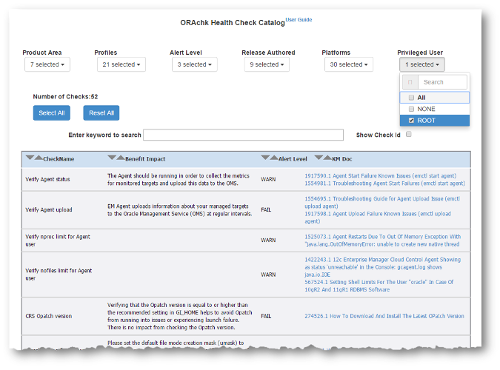
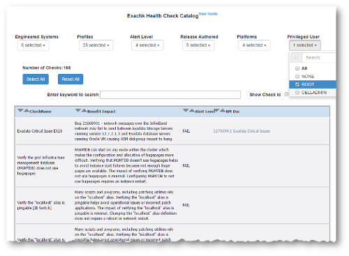

1.7 Running Subsets of Checks
Run a subset of health checks where necessary.
These subsets can be a logical grouping determined by Oracle ORAchk and Oracle EXAchk based on what the check is about.
You can also determine the subsets at an individual check level where you want to exclude or run only specific checks.
- Upgrade Readiness Mode (Oracle Clusterware and Oracle Database Upgrade Checks)
You can use Upgrade Readiness Mode to obtain an Upgrade Readiness Assessment. - Running Checks on Subsets of the Oracle Stack
Run checks on subsets of Oracle stack such as, database, cell, switch, and so on. - Using Profiles with Oracle ORAchk and Oracle EXAchk
Profiles are logical groupings of related checks. These related checks are grouped by a particular role, a task, or a technology. - Excluding Individual Checks
Excluding checks is recommended in situations where you have reviewed all check output and determined a particular check is not relevant for some particular business reason. - Running Individual Checks
There are times when you may want to run only specific checks. - Finding Which Checks Require Privileged Users
Use the Privileged User filter in the Health Check Catalogs to find health checks that must be run by a specific privileged user, such asroot. - Option to Run Only the Failed Checks
New option allows Oracle ORAchk and Oracle EXAchk to run only the checks that failed previously.
Related Topics
1.7.1 Upgrade Readiness Mode (Oracle Clusterware and Oracle Database Upgrade Checks)
You can use Upgrade Readiness Mode to obtain an Upgrade Readiness Assessment.
Upgrade Readiness Mode helps you plan the upgrade process for Oracle Cluster and Oracle RAC Database by automating many of the manual pre-checks and post-checks listed in the upgrade documentation.
There are two Upgrade Readiness modes:
-
Pre-upgrade check: Run this check during the planning phase of the upgrade process. Running this check helps you ensure that you have enough time to correct potential issues before the upgrade.
-
Post-upgrade check: Run this check after the upgrade to help you ensure the health of Oracle Grid Infrastructure and Oracle Database upgrades.
The Upgrade Readiness report provides the following information:
-
The target Clusterware and database versions. The report can only provide information for releases later than 11.2.0.3.
-
In pre-upgrade mode, the tool automatically detects all databases that are registered with Oracle Clusterware. It displays a list of these databases on which you can perform pre-upgrade checks.
-
In post-upgrade mode, the tool detects all databases registered with Oracle Clusterware. It displays a list of databases on which you can perform post-upgrade checks. If you select any release 11.2.0.3 or earlier releases, then the tool does not perform post-upgrade checks on these databases.
-
In both the modes, the tool checks the Oracle Clusterware stack and the operating system.
After the tool completes running, you are referred to the report. The report contains the upgrade readiness report and links where you can obtain additional information.
- Oracle Clusterware and Oracle Database Pre-Upgrade Checks
During your pre-upgrade planning phase, run Oracle ORAchk and Oracle EXAchk in pre-upgrade mode as the Oracle Database owner or asroot. - Oracle Clusterware and Oracle Database Post-Upgrade Checks
After performing the upgrade, you can run in post-upgrade mode as the Oracle Database software owner orrootto see further recommendations.
Parent topic: Running Subsets of Checks
1.7.1.1 Oracle Clusterware and Oracle Database Pre-Upgrade Checks
During your pre-upgrade planning phase, run Oracle ORAchk and Oracle EXAchk in pre-upgrade mode as the Oracle Database owner or as root.
–u –o pre option:$ ./orachk –u -o pre$ ./exachk –u -o preThe tool prompts you to specify the version that you are planning to upgrade to, and then runs all of the applicable checks for that specific version.
$ ./orachk -u -o pre
Enter upgrade target version (valid versions are 11.2.0.3.0, 11.2.0.4.0, 12.1.0.1.0, 12.1.0.2.0 and 12.2.0.1.0):- 12.1.0.2.0
CRS stack is running and CRS_HOME is not set. Do you want to set CRS_HOME to /scratch/app/11.2.0.4/grid?[y/n][y]
Checking ssh user equivalency settings on all nodes in cluster
Node myhost69 is configured for ssh user equivalency for oradb user
Node myhost71 is configured for ssh user equivalency for oradb user
Searching for running databases . . . . .
. . . . . .
List of running databases registered in OCR
1. ordsdb
2. mydb
3. All of above
4. None of above
Select databases from list for checking best practices. For multiple databases, select 3 for All or comma separated number like 1,2 etc [1-4][3].
. . . . . .
---------------------------------------------------------------------------------
CLUSTERWIDE CHECKS
---------------------------------------------------------------------------------
Detailed report (html) - /oracle/orachk/orachk_myhost70_mydb_041916_215655/orachk_myhost70_mydb_041916_215655.html
UPLOAD(if required) - /oracle/orachk/orachk_myhost70_mydb_041916_215655.zip
Output is similar to a standard HTML report output. However, the report shows checks that are relevant to upgrading Oracle Clusterware and Oracle Database to the version that you have specified.
1.7.1.2 Oracle Clusterware and Oracle Database Post-Upgrade Checks
After performing the upgrade, you can run in post-upgrade mode as the Oracle Database software owner or root to see further recommendations.
–u –o post option:$ ./orachk –u -o post$ ./exachk –u -o post$ ./orachk -u -o post
CRS stack is running and CRS_HOME is not set. Do you want to set CRS_HOME to /u01/app/12.2.0/grid?[y/n][y]
Checking ssh user equivalency settings on all nodes in cluster
Node myhost69 is configured for ssh user equivalency for oradb user
Node myhost71 is configured for ssh user equivalency for oradb user
Searching for running databases . . . . .
. . . . . .
List of running databases registered in OCR
1. ordsdb
2. mydb
3. All of above
4. None of above
Select databases from list for checking best practices. For multiple databases, select 3 for All or comma separated number like 1,2 etc [1-4][3].
. . . . . .
---------------------------------------------------------------------------------
CLUSTERWIDE CHECKS
---------------------------------------------------------------------------------
Detailed report (html) - /oracle/orachk/orachk_myhost70_mydb_042316_154355/orachk_myhost70_mydb_042316_154355.html
UPLOAD(if required) - /oracle/orachk/orachk_myhost70_mydb_042316_154355.zipOutput is similar to a standard but shows only the checks that are relevant after upgrading the Clusterware and database.
Related Topics
1.7.2 Running Checks on Subsets of the Oracle Stack
Run checks on subsets of Oracle stack such as, database, cell, switch, and so on.
- Running Database Checks
During Oracle ORAchk and Oracle EXAchk system checks, all Oracle database logins are performed by using local connections. - Running Cell Checks
Limit the scope of health checks to a subset of storage servers by using the–cell celloption. - Running Switch Checks
Limit the scope of health checks to a subset of switches by using the–ibswitches switchoption. - Running Checks on Other Elements of the Oracle Stack
Health checks are available for large parts of the Oracle software and hardware stack. Health check coverage is expanding with each new release. - Oracle ORAchk Support for Oracle Grid Infrastructure with no Oracle Database
Oracle ORAchk supports Oracle Grid Infrastructure stand-alone checks where no database is installed.
Parent topic: Running Subsets of Checks
1.7.2.1 Running Database Checks
During Oracle ORAchk and Oracle EXAchk system checks, all Oracle database logins are performed by using local connections.
The user running the tool must have operating system authenticated system privileges in the databases where you are running the tool.
Oracle software is installed by using an Oracle software installation owner, which is commonly referred to in Oracle documentation as the Oracle user. Your system can contain multiple Oracle database homes all owned by the same Oracle user, for example, oracle. Your system can also contain multiple database homes owned by different Oracle users, for example, oracle1, oracle2, oracle3. If you have multiple Oracle database homes configured, and these homes are owned by different Oracle users, then you must either run the tool as root user, or you must log in as the Oracle user for each Oracle database that you want to check. Use that Oracle user to run the tool on the Oracle database instance on which the user is the software installation owner.
By default, Oracle ORAchk and Oracle EXAchk present a list of running databases that are registered with Oracle Grid Infrastructure. You can run the tools on one database, run the tools on all databases, or run the tool with a comma-delimited list of numbers that designate the databases listed. When you check multiple nodes running on the cluster, you do not need to stage the tool on the other nodes in the cluster to check the database instances running on those nodes.
Parent topic: Running Checks on Subsets of the Oracle Stack
1.7.2.2 Running Cell Checks
Limit the scope of health checks to a subset of storage servers by using the –cell cell option.
Parent topic: Running Checks on Subsets of the Oracle Stack
1.7.2.3 Running Switch Checks
Limit the scope of health checks to a subset of switches by using the –ibswitches switch option.
Parent topic: Running Checks on Subsets of the Oracle Stack
1.7.2.4 Running Checks on Other Elements of the Oracle Stack
Health checks are available for large parts of the Oracle software and hardware stack. Health check coverage is expanding with each new release.
Health checks are organized into logical groupings, which are called profiles. You can run subsets of checks for different areas of the Oracle stack by the applicable profile.
Refer to the Using Profiles section for a list of available profiles.
Parent topic: Running Checks on Subsets of the Oracle Stack
1.7.2.5 Oracle ORAchk Support for Oracle Grid Infrastructure with no Oracle Database
Oracle ORAchk supports Oracle Grid Infrastructure stand-alone checks where no database is installed.
-nordbms$ ./orachk -nordbms$ ./exachk -nordbmsParent topic: Running Checks on Subsets of the Oracle Stack
1.7.3 Using Profiles with Oracle ORAchk and Oracle EXAchk
Profiles are logical groupings of related checks. These related checks are grouped by a particular role, a task, or a technology.
The following table describes the profiles that you can use:
Table 1-6 List of Available Profiles for Oracle ORAchk and Oracle EXAchk Checks
| Profile | Description |
|---|---|
|
|
Oracle Automatic Storage Management checks. |
|
|
Exadata only checks with a critical alert level. These represent the top tier of problems with the most severe likely impact. You must fix the problems marked as critical as soon as possible. |
|
|
Oracle patch checks. |
|
|
Oracle Business Intelligence checks. |
|
|
Oracle Clusterware checks. |
|
|
Compute Node checks (Oracle Exalogic only). |
|
|
Checks only for Oracle Virtual Machine Control VM ( |
|
|
Oracle Exadata checks, which you must review to determine pass or fail. |
|
|
Database Administrator (DBA) Checks. |
|
|
Oracle E-Business Suite checks. |
|
|
Extensive EL checks. |
|
|
Exalogic-Lite Checks(Oracle Exalogic Only). |
|
|
Data Collection for Exalogic Rack Comparison Tool (Oracle Exalogic Only). |
|
|
Oracle Enterprise Manager Cloud Control agent checks. |
|
|
Oracle Enterprise Manager Cloud Control management server. |
|
|
Oracle Enterprise Manager Cloud Control checks. |
|
|
Oracle GoldenGate checks. |
|
|
Hardware-specific checks for Oracle Engineered systems. |
|
|
Maximum Availability Architecture Checks. |
|
|
Nimbula checks for Oracle Exalogic. |
|
|
Oracle Access Manager checks. |
|
|
OBIEE Checks (Oracle Exalytics Only) |
|
|
Oracle Identity Manager checks. |
|
|
Oracle Unified Directory server checks. |
|
|
Oracle Virtual Networking. |
|
|
Peoplesoft best practices. |
|
|
Platinum certification checks. |
|
|
Preinstallation checks. |
|
|
Checks to complete before patching. |
|
|
Security checks. |
|
|
Siebel Checks. |
|
|
Oracle Solaris Cluster Checks. |
|
|
Oracle Storage Server Checks. |
|
|
InfiniBand switch checks. |
|
|
System administrator checks. |
|
|
Oracle TimesTen checks (Oracle Exalytics Only). |
|
|
Run user-defined checks from |
|
|
Oracle VM Server (OVS), Control VM, network time protocol (NTP), and stale virtual network interface cards (VNICs) check (Oracle Exalogic Only). |
|
|
Oracle ZFS Storage Appliances checks (Oracle Exalogic Only). |
You can run the command with an inclusion list, so that it runs only the checks in particular profiles. Run the command with the option –profile profile_name. You can run multiple profiles by running the command with a comma-delimited inclusion list. The inclusion list contains only the profiles that you want to run.
$ ./orachk –profile dba,clusterware$ ./exachk –profile dba,clusterwareThe output of inclusion list profile checks is similar to the standard HTML Report Output format. However, profile inclusion check reports show only output of checks that are in the specific profiles that you specify in the check.
You can also run the command with exclusion list. Run the command with the option –excludeprofile profile_name. When you run the command with an exclusion list, all profile checks are performed except for the checks in the profile that you list. You can list multiple profiles to exclude by running the command with a comma-delimited exclusion list.
$ ./orachk –excludeprofile dba,clusterware,ebs$ ./exachk –excludeprofile dba,clusterware,ebsThe output of exclusion list profile checks is similar to the standard HTML Report Output format. However, profile exclusion check reports show only the checks that are not in the profiles that you specify to exclude in the check.
Related Topics
Parent topic: Running Subsets of Checks
1.7.4 Excluding Individual Checks
Excluding checks is recommended in situations where you have reviewed all check output and determined a particular check is not relevant for some particular business reason.
This allows the health check HTML report to be streamlined to show only the problems you need to fix.
You can exclude checks in two different ways. Both the methods require you to find the check Ids.
–excludecheck check_id option. To exclude multiple check ids, use the comma-delimited list of check ids:$ ./orachk –excludecheck 0829D67E8B1549AFE05312C0E50AD04F,CB95A1BF5B1160ACE0431EC0E50A12EE$ ./exachk –excludecheck 0829D67E8B1549AFE05312C0E50AD04F,CB95A1BF5B1160ACE0431EC0E50A12EEAll excluded files are shown in the Excluded Checks section of the report.
The second method of excluding individual checks is as follows:
-
List all check ids in a file, one check id per line.
-
Save the file as
excluded_check_ids.txtin the same directory where the tool is installed$ ls -la total 67616 drwxr-xr-x 3 oradb oinstall 4096 Apr 28 06:27 . drwxr-xr-x 7 oradb oinstall 4096 Apr 28 06:22 .. -rw-r--r-- 1 oradb oinstall 2077055 Feb 8 09:13 ORAchk_Health_Check_Catlog.html drwxr--r-- 3 oradb oinstall 4096 Feb 7 21:31 .cgrep -rw-r--r-- 1 oradb oinstall 4690680 Feb 7 21:30 CollectionManager_App.sql -rw-r--r-- 1 oradb oinstall 44243042 Feb 7 21:31 collections.dat -rw-r--r-- 1 oradb oinstall 66 Apr 28 06:27 excluded_check_ids.txt -rwxr-xr-x 1 oradb oinstall 2653265 Feb 7 21:30 orachk -rw-r--r-- 1 oradb oinstall 9860069 Apr 25 11:17 orachk.zip -rw-r--r-- 1 oradb oinstall 3869 Feb 7 21:31 readme.txt -rw-r--r-- 1 oradb oinstall 5613338 Feb 7 21:31 rules.dat -rw-r--r-- 1 oradb oinstall 40052 Feb 7 21:30 sample_user_defined_checks.xml -rw-r--r-- 1 oradb oinstall 2888 Feb 7 21:30 user_defined_checks.xsd -rw-r--r-- 1 oradb oinstall 425 Feb 7 21:31 UserGuide.txt $ cat excluded_check_ids.txt 0829D67E8b1549AFE05312C0E50AD04F CB95A1BF5B1160ACE0431EC0E50A12EE
The excluded_check_ids.txt file remains in this directory. Each time the tool is run, all applicable health checks are run except those specified in the file.
All excluded files are shown in the Excluded Checks section of the report.
Parent topic: Running Subsets of Checks
1.7.5 Running Individual Checks
There are times when you may want to run only specific checks.
Running individual check can particularly be useful in situations such as:
-
Quickly verify if a particular issue has been fixed
-
Troubleshoot performance or run specific checks
-
Develop and test user-defined checks
Find the check ids before you run individual checks.
Related Topics
Parent topic: Running Subsets of Checks
1.7.6 Finding Which Checks Require Privileged Users
Use the Privileged User filter in the Health Check Catalogs to find health checks that must be run by a specific privileged user, such as root.
Refer to the Oracle ORAchk or Oracle EXAchk example to see how to locate a privileged user.
Example 1-21 Finding a Privileged User Health Check in Oracle ORAchk Health Check Catalog:
Figure 1-31 Oracle ORAchk - Privileged User
Description of "Figure 1-31 Oracle ORAchk - Privileged User"
Go to My Oracle Support note 1268927.2, and click the Health Check Catalog tab to open an Oracle ORAchk Health Check Catalog:
https://support.oracle.com/rs?type=doc&id=1268927.2
You must have Javascript enabled to view the form.
Example 1-22 Finding a Privileged User in Oracle EXAchk Health Check Catalog
Figure 1-32 Oracle EXAchk - Privileged User
Description of "Figure 1-32 Oracle EXAchk - Privileged User"
Example Oracle EXAchk Health Check Catalog:
Parent topic: Running Subsets of Checks
1.7.7 Option to Run Only the Failed Checks
New option allows Oracle ORAchk and Oracle EXAchk to run only the checks that failed previously.
To run only the checks that failed previously:
-
Generate a health check report
-
Fix the issues identified
-
Generate another health check report verifying only the issues that failed before
-failedchecks previous_resultParent topic: Running Subsets of Checks